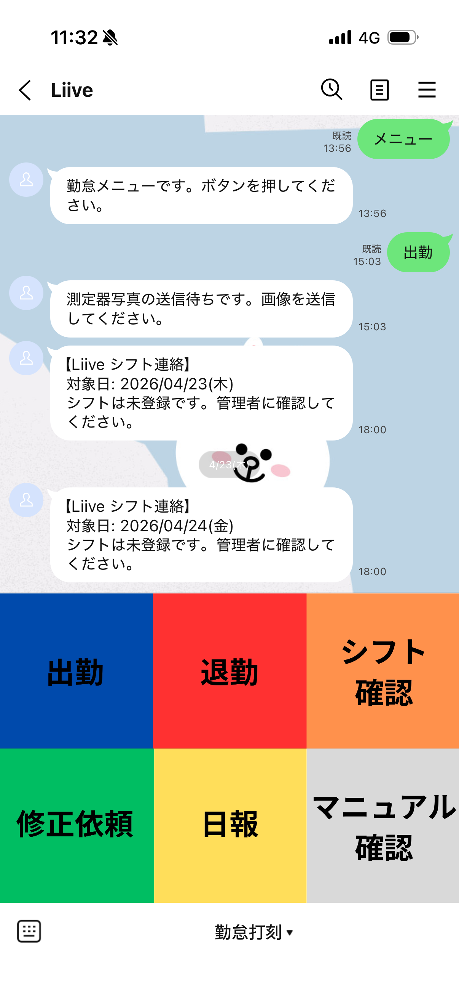
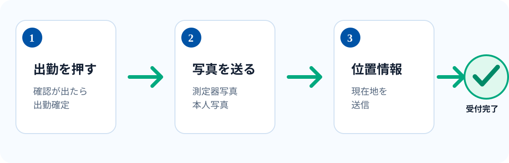
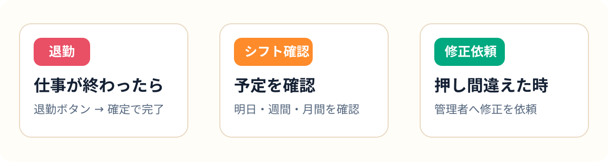

出勤
出勤ボタンを押します。確認が出たら「出勤確定」を押してください。
Liive 公式LINE 勤怠
出勤・退勤・シフト確認・修正依頼を、LINEだけで迷わず使えるようにまとめています。
最初に覚えること
出勤ボタンを押します。確認が出たら「出勤確定」を押してください。
飲酒チェック対象の方は測定器写真、続けて本人写真を送ります。
LINEの案内に従って、現在地を送ります。登録地点と照合されます。
「受け付けました」と表示されたら打刻完了です。
画面イメージ
大きいボタンなので、スマホ操作が苦手な方でも押しやすい作りです。

勤務開始と終了の時に押します。押し間違えた場合は「修正依頼」を使います。
自分のシフトを確認できます。管理者から配信された内容もLINEに届きます。
このページをいつでも開けます。使い方を忘れた時に見てください。
現在は準備中です。案内があるまでは使わなくて大丈夫です。
図解
途中で止まったら、LINEに表示された案内を上から順番に進めてください。

図解

よくある場面
LINE下部のカメラから、その場で撮影して送ってください。
LINEの「＋」から位置情報を選び、現在地を送信してください。
「修正依頼」を押して、管理者に修正内容を送ってください。
トークに「メニュー」と送ると、操作ボタンを再表示できます。
マニュアルの開き方
補足: トークに「マニュアル」「使い方」「ヘルプ」と送っても開けます。